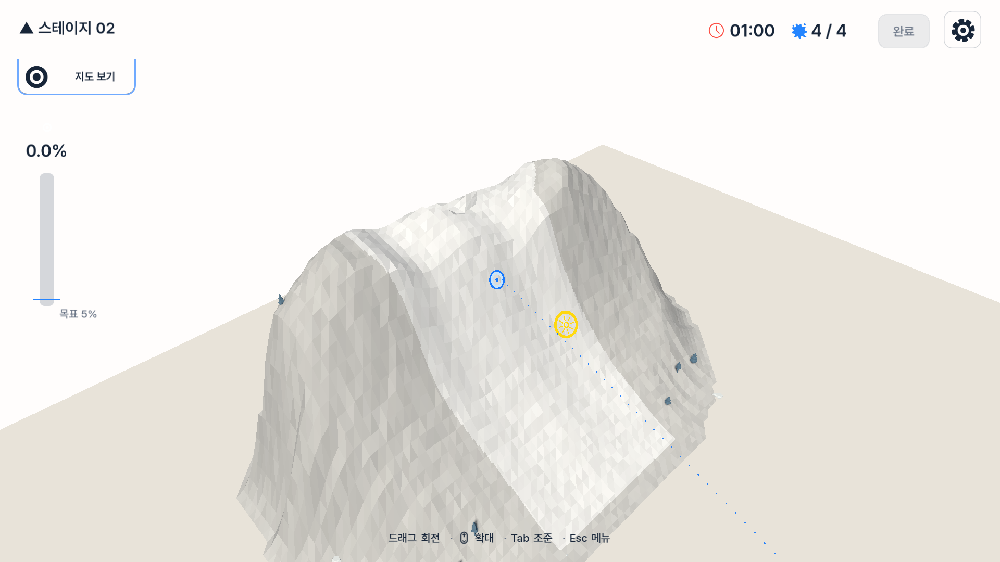
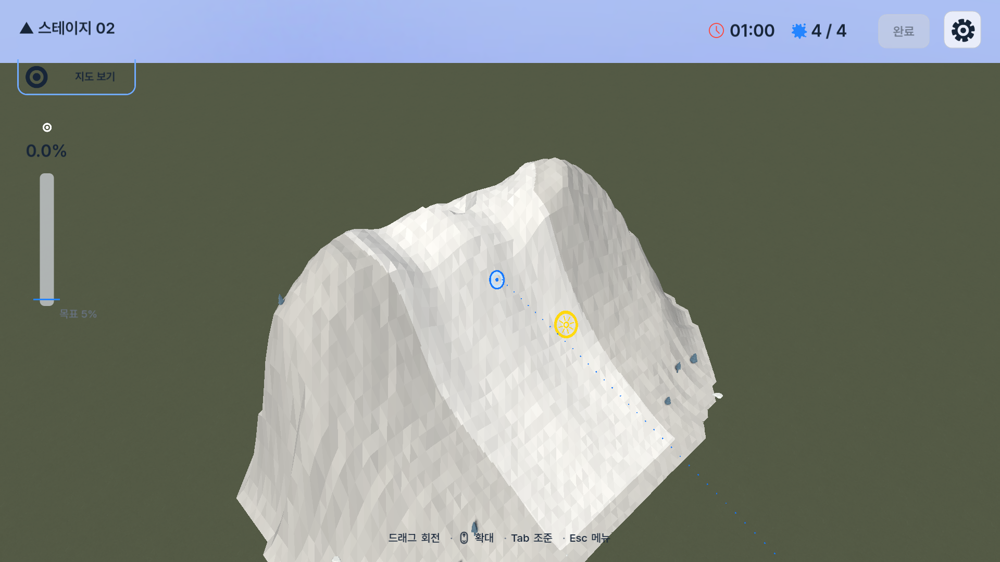
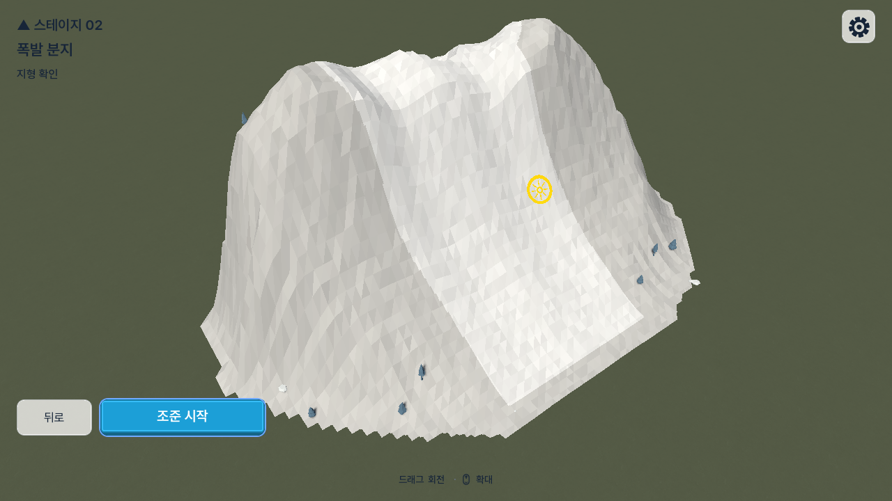
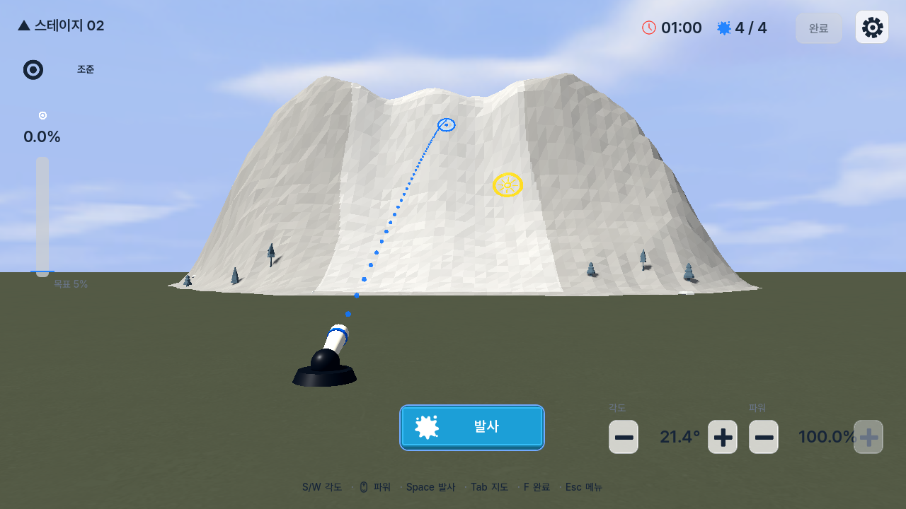

직사각형 세계 경계 제거
고정된 충돌 지면은 유지하고, 같은 메시의 렌더 면만 카메라 원거리 면 너머까지 확장했다.
Paint Mountain · Runtime Environment Review
직사각형 판처럼 보이던 지면을 렌더 전용으로 확장하고, CC0 지면·하늘 에셋을 실제 게임에 적용했다. 충돌 범위와 스테이지 규칙은 그대로다.
이 보고서는 스테이지 진입 전 지형이 공중에 뜬 것처럼 보이던 현상을 진단하고, 외부 환경 리소스 팩을 비교한 뒤 실제 적용 결과와 성능 비용을 기록한다.
고정된 충돌 지면은 유지하고, 같은 메시의 렌더 면만 카메라 원거리 면 너머까지 확장했다.
Kenney Skyboxes, ambientCG Ground 003, 기존 Kenney Nature Kit 나무·바위를 함께 사용했다.
17,269,724 B에서 17,296,016 B로 26,292 B 증가했다. 저장소의 +10% 한도를 통과했다.
지형과 지면의 실제 높이는 이미 월드 Y -2.0에서 맞아 있었다. 문제는 물리가 아니라 렌더 표현과 환경 전환이었다.
| 관찰 | 원인 | 적용한 해결책 | 보존한 규칙 |
|---|---|---|---|
| 위에서 둘러볼 때 베이지색 직사각형 판이 노출됨 | 유한 충돌 지면과 렌더 지면이 같은 크기였음 | 렌더 면만 사방 480 m 확장 | 충돌 면·실패 판정·접촉 ID 불변 |
| 지면이 평평한 카드처럼 보임 | 기존 재질이 unshaded이고 그림자를 받지 않음 | 저채도·저대비 월드 공간 지면 셰이더 적용 | 페인트·점수에 포함되지 않는 비대상 지면 |
| 파노라마를 넣어도 하늘이 흰색 | 숨겨진 메뉴 미리보기 WorldEnvironment가 계속 뷰포트를 점유 | 미리보기 숨김 시 환경 리소스를 해제 | 메뉴 미리보기와 게임플레이 환경 소유권 분리 |
| 첫 파노라마 적용 뒤 산이 과노출 | 하늘 기반 간접광이 밝은 산 재질과 중첩 | 기존의 절제된 색상 기반 환경광으로 복원 | 기존 태양 방향과 낮 시간대 미술 방향 |
두 이미지는 Stage 02의 한국어 Map Inspection 상태를 같은 1920×1080 전달 캡처 경로로 기록한 것이다.


Godot 4.7.1 Compatibility 렌더러의 Windows 릴리스 실행 파일에서 백그라운드 캡처했다. 디버그 오버레이는 없다.


라이선스가 명확하고 Godot Web 내보내기에 무리가 없는 후보를 우선했다. 실제 저장소에는 필요한 파일만 포함했다.
| 리소스 팩 | 장점 | 주의점 | 결정 |
|---|---|---|---|
| Kenney Skyboxes | 스타일화된 낮 하늘, CC0, 게임 톤과 높은 일치 | 원본 2048px를 Web 임포트에서 1024px로 제한 | 적용 · day 1장 |
| ambientCG Ground 003 | 반복 가능한 자연 지면, CC0, 1K 제공 | 사진 질감이므로 채도·대비를 크게 낮춰야 함 | 적용 · Color 1장 |
| Kenney Nature Kit | 330개 저폴리 3D 파일, CC0, 현재 게임 톤과 일치 | 플레이 경로를 가리지 않도록 밀도를 낮게 유지 | 기존 5개 재사용 |
| KayKit Forest | 100개 이상, 무료 CC0, 약 6.1 MB | 기존 Kenney 식생과 혼용 시 형태 언어가 갈릴 수 있음 | 후보 · 미포함 |
| Quaternius Ultimate Stylized Nature | 63개 이상, glTF 포함, CC0 | 현재 필요한 하늘·지면 문제보다 범위가 큼 | 후보 · 미포함 |
| Quaternius Stylized Nature MegaKit | 116개 모델과 넓은 생태계 표현 | Standard 팩 약 99 MB로 현 Web 예산에 과함 | 후보 · 미포함 |
| Poly Haven Farmland Overcast | 고품질 CC0 HDRI와 자연스러운 광원 | 사실적 표현과 HDR 용량이 현재 저폴리 방향에 과함 | 후보 · 미포함 |
17,296,016 B. 20 MiB 절대 한도와 기준 대비 +10% 한도를 모두 통과했다.
raw 49,708,547 B. 스레드 비활성 계약과 대소문자 정확 참조 8개를 검증했다.
플러그인·패키지·네트워크 요청이 없다. 모든 리소스는 로컬 Godot 임포트다.
scripts/verify.ps1, 전체 테스트, Windows/Web 릴리스, Web 정적 검증이 통과했다.이번 변경은 “열린 산” 구성을 유지하는 환경 기반 작업이다. 카메라 조작, 지형 생성, 페인트 판정, 스테이지 데이터는 수정하지 않았다.
높은 Map Inspection 각도에서는 하늘보다 지면이 더 많이 보인다. 이는 떠 있는 판을 숨기기 위한 정상 결과다.
나무 밀도를 늘리면 경로·기믹 판독성이 떨어질 수 있다. 추가 시 비충돌 장식과 여백 규칙을 먼저 유지해야 한다.
로컬 Windows/Web 릴리스까지 검증했다. itch.io 업로드 자체는 이 작업 범위에 포함하지 않았다.
리소스 정보는 2026-08-11에 각 제작자 공식 페이지에서 확인했다. 번들 파일과 아카이브 SHA-256은 저장소의 docs/asset-licenses.md에 기록했다.